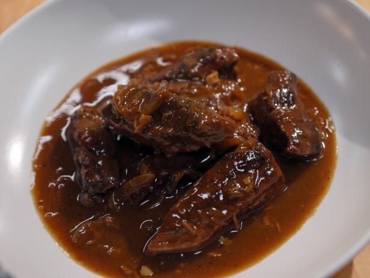

Beef in Beer

Ingredients
- 500g of cheap Beef Pieces (Stewing Steak usually is cheap)
- 500 mls of Real Ale
- 4 large Onions
- 2 fat Cloves of Garlic
- 2 tbsp of Plain Flour
Method of Cooking
- Raw Beef, roll it in the flour, fry 4-5 pieces at a time in a hot saucepan to seal, put to one side when all done
- Cut the Onions into quarters, fry in the same frying pan as the beef to soak up the juices
- Towards the end of frying the onion (they should be nicely brown round the edges) throw in the smashed up cloves of Garlic
- Transfer the beef, onions, and garlic to a deep casserole dish. Stir in the remaining flour
- Pour on the bottle of beer
- Cover, and cook at 150 for about and a half hours, will be gorgeous when it comes out, serve with mash